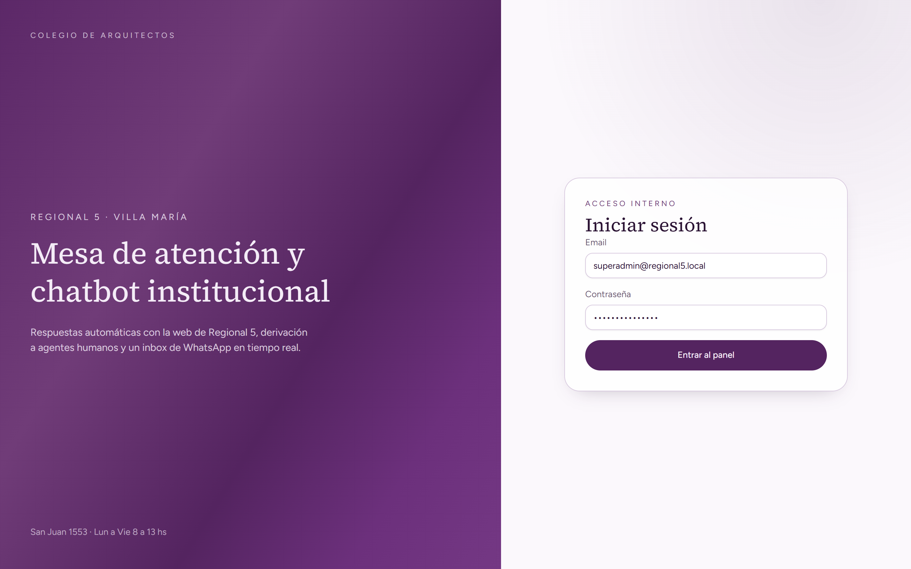
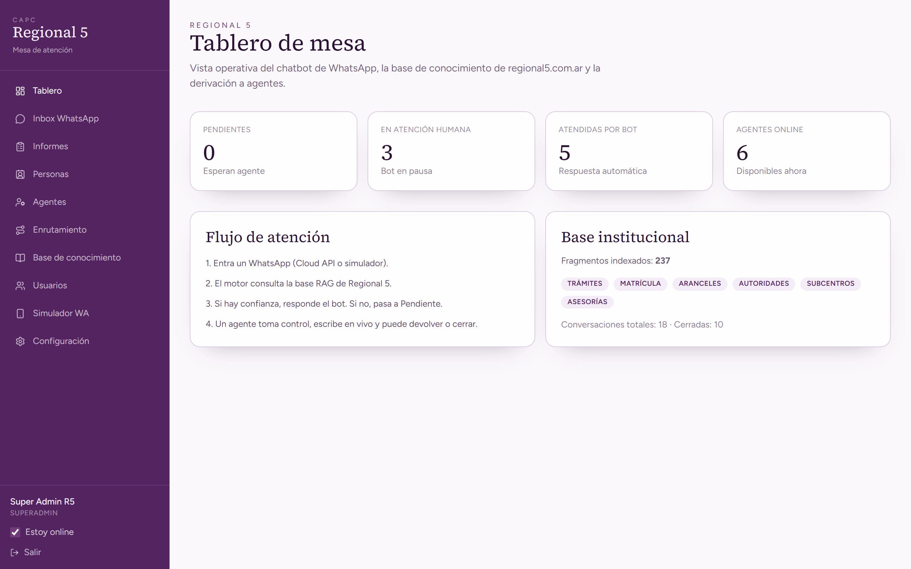
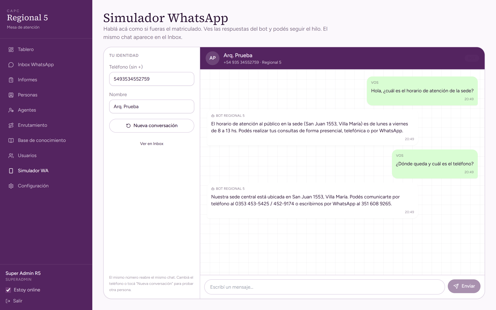
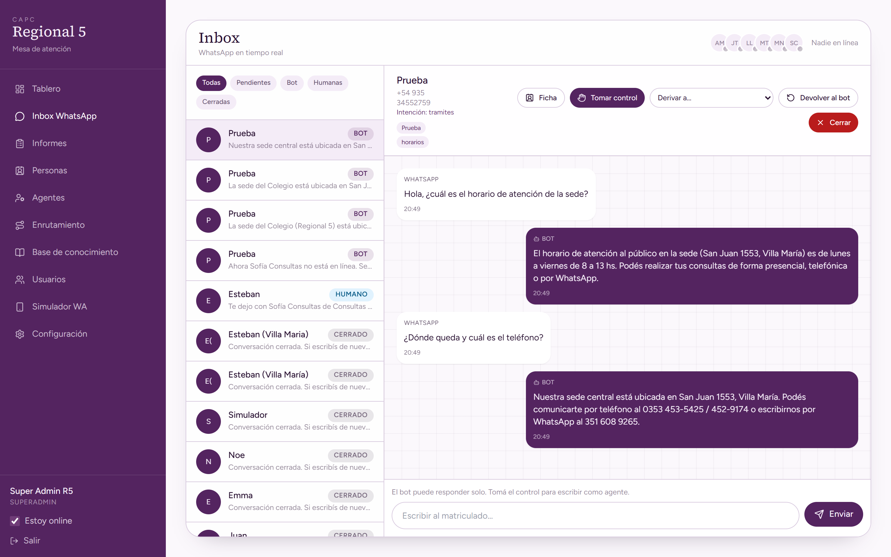
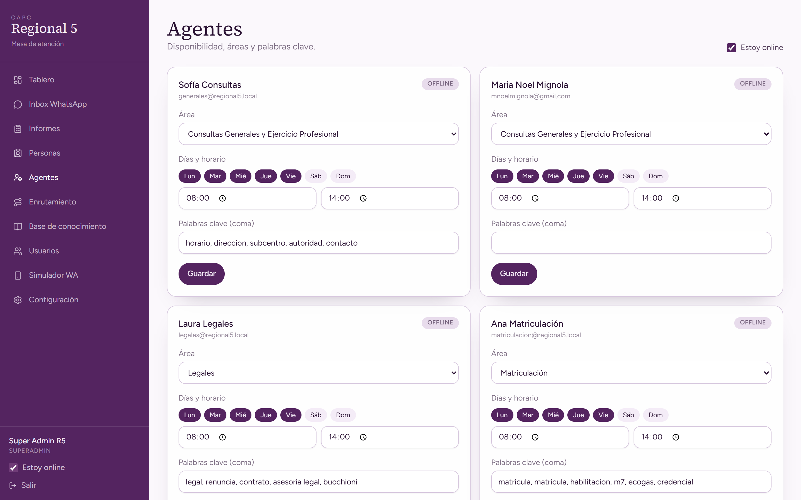
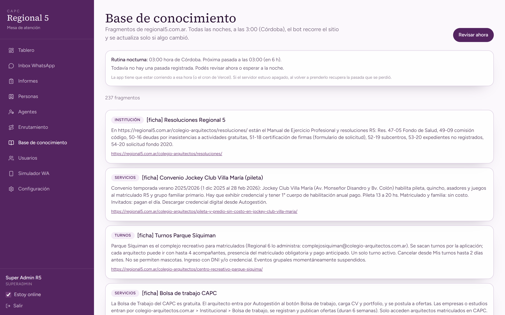
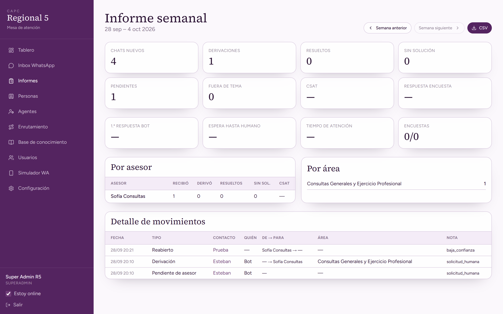

Colegio de Arquitectos de Córdoba
Regional 5 · Villa María
Un chatbot de WhatsApp que responde con la información oficial de Regional 5 y deriva a un agente humano solo cuando hay alguien conectado.
Presentación de producto · 2026
El contexto
Horarios, turnos, firma digital, pagos, trámites. Muchas se pueden resolver al instante. Otras necesitan a una persona. Hoy ese cruce suele ser informal, lento y difícil de medir.
La sede atiende lunes a viernes de 8 a 13. El matriculado escribe a cualquier hora y espera hasta el día siguiente.
La web ya tiene la respuesta, pero hay que buscarla, copiarla y reenviar. La mesa se satura con lo mismo.
No queda claro quién tomó el caso, si se resolvió, cuánto tardó ni cómo evaluó el matriculado la atención.
La propuesta
No reemplaza a la mesa: la ordena. El asistente atiende lo rutinario. El equipo humano entra cuando hace falta y está en línea.
El matriculado escribe por WhatsApp. El mismo hilo puede atenderlo el bot o un agente, sin cambiar de número.
Conocimiento
Consulta regional5.com.ar y la base institucional. Si no tiene el dato, no inventa: ofrece derivar a un humano.
Mesa
Tesorería, trámites, legales y el resto de áreas ven el chat, toman control, derivan y cierran con registro.
Flujo
WhatsApp real (Meta Cloud API) o el simulador interno. Queda un único chat por teléfono.
Busca en la base de Regional 5 y contesta en tono institucional, breve y rioplatense.
Si piden un humano y hay un agente conectado, se lo pasa. Si no, sigue el bot y no deja el chat colgado.
El agente toma, responde, devuelve o cierra. Se envía encuesta y queda el informe semanal.
El bot solo habla de temas del Colegio. Si la consulta se va de tema, invita a volver a trámites, matrícula o servicios institucionales.
Panel
SuperAdmin y agentes entran al mismo panel. Cada uno ve la mesa, su presencia y las conversaciones.

Tablero
Pendientes, chats con humano, atendidos por el bot y agentes en línea. Sirve para abrir el día y priorizar.

Experiencia
El simulador muestra el mismo chat que WhatsApp. Sirve para capacitar al equipo y para mostrar el producto sin conectar Meta.

Operación
La mesa ve todos los chats, toma el control, escribe como Regional 5, deriva a un colega o cierra el caso.

Equipo
Cada persona tiene departamento, horarios y temas. El sistema deriva en round-robin entre quienes están conectados.

Fuente de verdad
El bot no improvisa normativa. Lee fragmentos de regional5.com.ar y se actualiza solo si el sitio cambió.

Gestión
Para mostrar resultados: volumen, derivaciones, resueltos, tiempos y satisfacción. Exportable a CSV.

Valor
Alcance actual
1. Número de WhatsApp Business y Meta Cloud API.
2. Clave de modelo de IA (Gemini / OpenAI) para el diálogo.
3. Usuarios reales de cada mesa, con su área.
4. Hosting (Vercel u otro) y dominio del Colegio.
Hasta entonces, el simulador permite recorrer el producto completo en una reunión.
Próximo paso
Abrimos el simulador, hacemos una consulta real de un matriculado, tomamos el chat en el inbox y mostramos el informe. Sin instalar nada del lado de Meta.
Colegio de Arquitectos · Regional 5 · Villa María
San Juan 1553 · Lun a Vie 8 a 13 hs